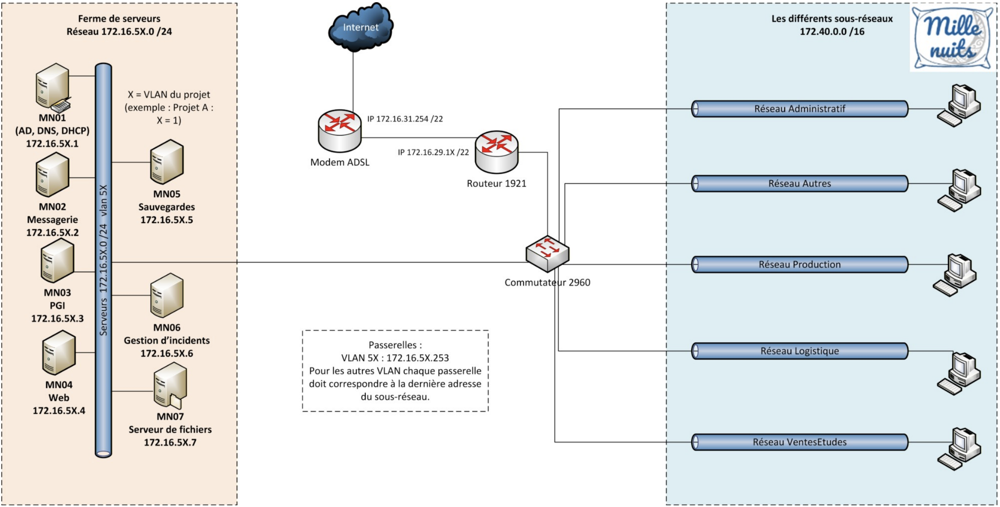

Mission 2 - Mise en place de l'infrastructure réseau
Compte rendu rédigé par : MANCEAU Léandre, RAHMY Arthur, BIDANESSY Coumba
Formation : BTS SIO 1ère année - Option SISR
Établissement : Lycée Paul-Louis Courier, Tours
1. Schéma physique

2. Choix des VLANs dans les switchs
Pour chaque VLAN de chaque salle, un ID de VLAN a été attribué, avec l'attribution de chaque port selon le VLAN adapté.
Exemple — Création du VLAN 20 (Autres) et affectation d'un port :
Switch>enable
Switch#configure terminal
Enter configuration commands, one per line. End with CNTL/Z.
Switch(config)#vlan 20
Switch(config-vlan)#name Autres
Switch(config-vlan)#exit
Switch(config)#exit
Switch#
%SYS-5-CONFIG_I: Configured from console by console
Switch#configure terminal
Enter configuration commands, one per line. End with CNTL/Z.
Switch(config)#interface FastEthernet0/1
Switch(config-if)#switchport access vlan 20
Switch(config-if)#exit
Switch(config)#exit
Switch#
%SYS-5-CONFIG_I: Configured from console by console
3. Liaisons trunk entre le commutateur central des salles et le routeur
Activation du mode trunk sur le commutateur
Switch>enable
Switch#configure terminal
Enter configuration commands, one per line. End with CNTL/Z.
Switch(config)#int g0/1
Switch(config-if)#switchport mode trunk
Switch(config-if)#end
Switch#
%SYS-5-CONFIG_I: Configured from console by console
Exemple — Mode trunk vers le sous-réseau en VLAN 50
Router(config)#int g0/0.50
Router(config-subif)#
%LINK-5-CHANGED: Interface GigabitEthernet0/0.50, changed state to up
%LINEPROTO-5-UPDOWN: Line protocol on Interface GigabitEthernet0/0.50, changed state to up
Router(config-subif)#encapsulation dot1q 50
Router(config-subif)#ip addr 172.40.2.62 255.255.255.192
4. Routage statique sur le routeur qui relie le modem ADSL
Router>enable
Router#conf t
Enter configuration commands, one per line. End with CNTL/Z.
Router(config)#int g0/1
Router(config-if)#ip route 0.0.0.0 0.0.0.0 172.16.29.15
5. Translation d'adresse (NAT) mise en place sur le routeur qui relie le modem ADSL
Définition des access-lists
access-list 1 permit 172.40.0.0 0.0.0.255
access-list 1 permit 172.40.1.0 0.0.0.127
access-list 1 permit 172.40.1.128 0.0.0.63
access-list 1 permit 172.40.2.0 0.0.0.63
access-list 1 permit 172.40.2.64 0.0.0.63
Configuration des sous-interfaces (router-on-a-stick)
interface GigabitEthernet0/0.10
encapsulation dot1Q 10
ip address 172.40.1.254 255.255.255.128
ip nat inside
interface GigabitEthernet0/0.20
encapsulation dot1Q 20
ip address 172.40.1.126 255.255.255.128
ip nat inside
interface GigabitEthernet0/0.30
encapsulation dot1Q 30
ip address 172.40.0.254 255.255.255.0
ip nat inside
interface GigabitEthernet0/0.40
encapsulation dot1Q 40
ip address 172.40.2.126 255.255.255.192
ip nat inside
interface GigabitEthernet0/0.50
encapsulation dot1Q 50
ip address 172.40.2.62 255.255.255.192
ip nat inside
Activation du NAT overload (PAT)
Route statique vers la passerelle du lycée pour l'accès Internet
6. Captures d'écran Switch / Routeur
Les différentes manipulations effectuées comprennent la sauvegarde des configurations sur le routeur et le switch, ainsi que des tests de connectivité par ping.
Test de ping sur Internet depuis le PC Portable
C:\Users\etudiant>ping 8.8.8.8
Envoi d'une requête 'Ping' 8.8.8.8 avec 32 octets de données :
Réponse de 8.8.8.8 : octets=32 temps=6 ms TTL=111
Réponse de 8.8.8.8 : octets=32 temps=6 ms TTL=111
Réponse de 8.8.8.8 : octets=32 temps=6 ms TTL=111
Réponse de 8.8.8.8 : octets=32 temps=6 ms TTL=111
Statistiques Ping pour 8.8.8.8:
Paquets : envoyés = 4, reçus = 4, perdus = 0 (perte 0%),
Durée approximative des boucles en millisecondes :
Minimum = 6ms, Maximum = 6ms, Moyenne = 6ms
C:\Users\etudiant>ping 1.1.1.1
Envoi d'une requête 'Ping' 1.1.1.1 avec 32 octets de données :
Réponse de 1.1.1.1 : octets=32 temps=15 ms TTL=51
Réponse de 1.1.1.1 : octets=32 temps=15 ms TTL=51
Réponse de 1.1.1.1 : octets=32 temps=22 ms TTL=51
Réponse de 1.1.1.1 : octets=32 temps=17 ms TTL=51
Statistiques Ping pour 1.1.1.1:
Paquets : envoyés = 4, reçus = 4, perdus = 0 (perte 0%),
Durée approximative des boucles en millisecondes :
Minimum = 15ms, Maximum = 22ms, Moyenne = 17ms
Sauvegarde de la configuration du Switch (TFTP)
Switch#copy startup-config tftp:
Address or name of remote host []? 172.16.30.137
Destination filename [switch-config]? switchm2
!!
1521 bytes copied in 0.009 secs (169000 bytes/sec)
Switch#
Test de ping sur l'interface extérieure du routeur depuis le PC Portable
Statistiques Ping pour 172.40.1.254:
Paquets : envoyés = 4, reçus = 4, perdus = 0 (perte 0%)
Durée approximative des boucles en millisecondes :
Minimum = 0ms, Maximum = 0ms, Moyenne = 0ms
C:\Users\etudiant>ping 172.16.29.16
Envoi d'une requête 'Ping' 172.16.29.16 avec 32 octets de données :
Réponse de 172.16.29.16 : octets=32 temps<1ms TTL=255
Réponse de 172.16.29.16 : octets=32 temps<1ms TTL=255
Réponse de 172.16.29.16 : octets=32 temps<1ms TTL=255
Réponse de 172.16.29.16 : octets=32 temps<1ms TTL=255
Statistiques Ping pour 172.16.29.16:
Paquets : envoyés = 4, reçus = 4, perdus = 0 (perte 0%)
Durée approximative des boucles en millisecondes :
Minimum = 0ms, Maximum = 0ms, Moyenne = 0ms
Test de ping depuis le Routeur
Router#ping 172.40.1.254
Type escape sequence to abort.
Sending 5, 100-byte ICMP Echos to 172.40.1.254, timeout is 2 seconds:
!!!!!
Success rate is 100 percent (5/5), round-trip min/avg/max = 1/1/4 ms
Router#ping 172.16.29.16
Type escape sequence to abort.
Sending 5, 100-byte ICMP Echos to 172.16.29.16, timeout is 2 seconds:
!!!!!
Success rate is 100 percent (5/5), round-trip min/avg/max = 1/1/4 ms
Router#ping 1.1.1.1
Type escape sequence to abort.
Sending 5, 100-byte ICMP Echos to 1.1.1.1, timeout is 2 seconds:
!!!!!
Success rate is 100 percent (5/5), round-trip min/avg/max = 4/7/8 ms
Router#
Création du VLAN 10 — Vérification avec show vlan brief
Switch#show vlan brief
VLAN Name Status Ports
---- -------------------------------- --------- ----------------------------
1 default active Fa0/2, Fa0/3, Fa0/4, Fa0/5
Fa0/6, Fa0/7, Fa0/8, Fa0/9
Fa0/10, Fa0/11, Fa0/12, Fa0/13
Fa0/14, Fa0/15, Fa0/16, Fa0/17
Fa0/18, Fa0/19, Fa0/20, Fa0/21
Fa0/22, Fa0/23, Gi0/1, Gi0/2
10 vlan10 active Fa0/1
69 vlan69 active
1002 fddi-default act/unsup
1003 token-ring-default act/unsup
1004 fddinet-default act/unsup
1005 trnet-default act/unsup